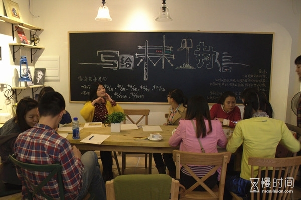
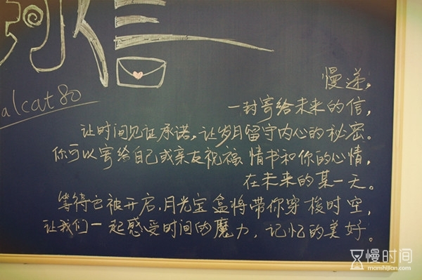

慢 递
More>>

把现在寄给未来
有一家叫“时间慢递”的小店，小店是慢时间网旗下以慢递为主题的咖啡小店。
慢递是小店里的主题，满墙壁整齐摆放的明信片都是经过认真挑选的，色彩绚丽风格多样，一看就让人有想寄明信片的冲动。
你可以认真挑选几张明信片或者写一封信寄给未来的自己、家人、朋友或爱人，一个月、半年、一年、三年甚至更久的时间，时间慢递会帮你小心保管，并在你指定的日期为你投递出去。然后你只需要静静的等待，等待在未来的某一天收到印有慢时间邮戳的信件，感受时间的魔力，记忆的美好。
除了慢递服务，时间慢递还是一个非常不错的消磨时间的去处。累了，可以去小店感受下，坐在窗边的角落处看阳光洒进来，点上一杯香醇的咖啡，配以精美而传统的小西点，尽享美味。喜欢花草茶和果茶的客人也可随意选择一款适合自己口味的茶，或清新淡雅，或唇齿留香。也可以在书柜上挑选一本自己喜欢的闲书调剂下心情，和朋友聊聊天，听听音乐，度过美好的慢时光。
小店里的每一个小细节都有心意，清净优雅的环境，温馨的小店布局定会让你印象深刻。黑板上涂鸦的粉笔字让人回想起校园生活；满墙壁整齐摆放的明信片色彩绚丽风格多样，让人目不暇接；实木制的桌椅古朴自然，倍感亲切；精心挑选的灯饰，温暖的灯光带给人温暖的感受。小店里的每一件摆件都是店家用心挑选的，他们希望这些装饰能让每一个进店的客人内心安静下来，感受到他们对生活无限的热爱与想象。
小店还会经常不定期的举办各种活动，读书会、桌游活动、电影观看、手工制作、音乐分享、咖啡交流……让时间慢递丰富你的生活，扩大你的交友圈。

